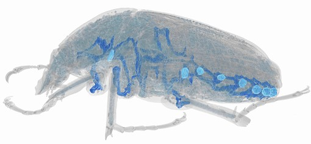

Isometric Spiracular Scaling in Scarab Beetles: Implications for Diffusive and Advective Oxygen Transport

A reconstruction of one of the scarab beetles from our dataset. The blue tubes within the beetle show the large, main tracheal trunk connected to the lighter blue spiracles. Scarab beetles have eight spiracles, six in the abdomen and two in the thorax. Spiracles are the openings of the tracheal system through which air enters the animal to supply oxygen to their muscles and other tissue.
For information on the beetles included in our scaling study, and details on the measurements we took of the spiracles, take a look here.
For details and code on the regression analyses that we performed, take a look here.
For the calculations and code to generate the expected partial pressure gradients of oxygen needed to supply beetle metabolic demand, take a look here.
For supplementary regressions investigating whether phylogeny influenced the observed scaling patters, look here for a Bayesian approach in python, and here for a frequentist approach in R.
Code needed to take raw pixel measurements of the spiracles and parse them, convert to a tidy format, and calculate values with real world units, look here.